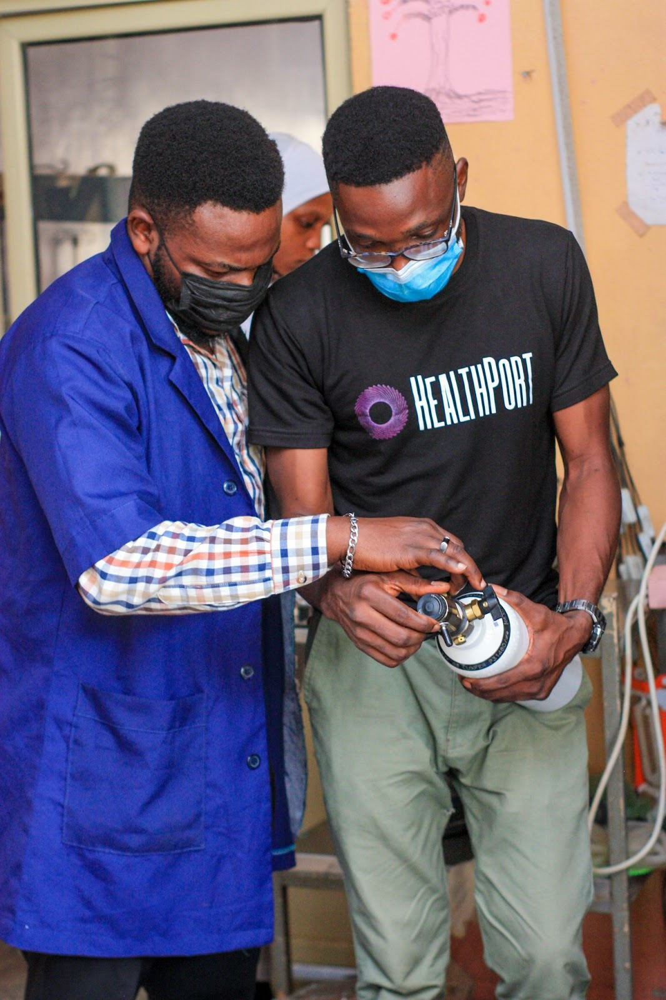
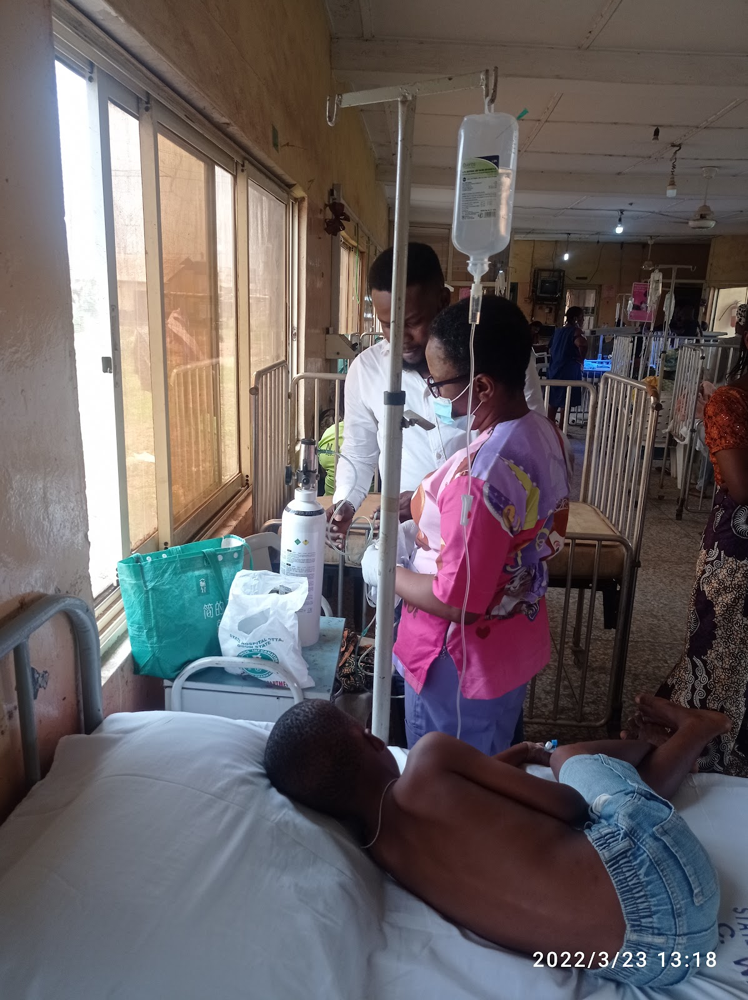

Medical Oxygen is an Essential Medicine–How to Get it to People in Need

Medical oxygen access in SubSaharan Africa is a significant challenge that requires an assessment of current processes and ongoing innovations. Oxygen is required to manage a wide range of medical illnesses, especially in the acute phase of illness. This life-saving medicine, however, is not available to many in low-resource settings, leading to preventable deaths. In instances where medical oxygen is available, a multitude of issues limits adequate use ranging from poor diagnostic capture rates to inadequate clinician capacity to initiate and titrate oxygen for optimal patient outcomes. The prohibitive costs of sourcing medical oxygen have also created a management culture of avoidance of this therapy for many who would benefit from it.
It is clear that many need to become more familiar with the challenges involved in the production and distribution of medical oxygen in this part of the world to contribute to implementing efficient solutions. To leverage the learnings from COVID-19, which brought awareness to oxygen access limitations that preceded the pandemic, we need to have efficient supply chain systems in place. Over 4.2 million children affected by respiratory illnesses in this region rely on medical oxygen to improve their outcomes, but limited access repeatedly contributes to the high mortality rates. The HealthPort Oxygen services, powered by modular oxygen production units, is closing the oxygen supply chain gap in Nigeria, allowing thousands of left-behind health facilities to access oxygen and improve outcomes within their communities. Although existing solutions of large medical oxygen plants can be efficient in certain areas, they leave out most users with transportation limitations. For those relying on oxygen concentrators, poor grid electricity and lack of access to maintenance reduce maximized use of the systems. Unfortunately, these last-mile inadequacies leave the patient as the most prominent bearer of the burden.
HealthPort’s recent partnership with the Oxygen CoLab further harnesses our commitment to sustaining last-mile oxygen access. To tackle the current Oxygen access problems, we have designed a solution centered around patient needs. This program will allow us to examine diagnostic inefficiencies, oxygen price fluctuations, and the unavailability of systems that simplify the clinicians' utilization of this critical medical resource. No one needing medical oxygen should have to wait for facilities to source the oxygen- sometimes taking more than three hours. One way we are improving ready-to-use medical oxygen at the bedside is to bypass the middleman in oxygen sourcing. With affordable onsite and near-site oxygen production, hospital facilities can focus on diagnosing the patient and recommending oxygen therapy immediately without the fear of resource limitations. Providing clinical training and augmented virtual support improves clinician comfort with the recommendation and provision of oxygen therapy, as well as community education to disseminate information to individuals and families who are at risk. Through hospital integration and local partnerships, we are creating systems that can provide medical oxygen access in an organized and efficient manner while maintaining affordability.
Back to News